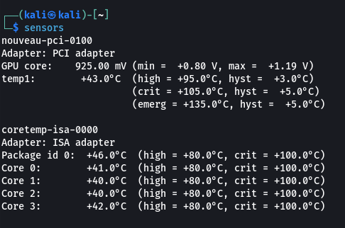

Your PC has aged a few years, and you are wondering if the CPU temperature has increased. In this blog, I will show you how to check the CPU temperature on Linux.
Sensors is the tool that enables you to monitor the CPU, fan speed, voltage, and other hardware-related components on Linux. The "sensors tool is included in the package lm-sensors.
If you are using Debian, Ubuntu, or Mint, this tool should already be installed. If it isn't, you can simply run the commands below to install it.
install lm-sensors on Fedora 34
After the installation is complete, type this command in the terminal to monitor the temperature.
after executing the command it shall show you the temperature of each cpu core along with CPU details and fan speed
if you are using Windows system and wanting to check CPU temperature then check out our this blog.